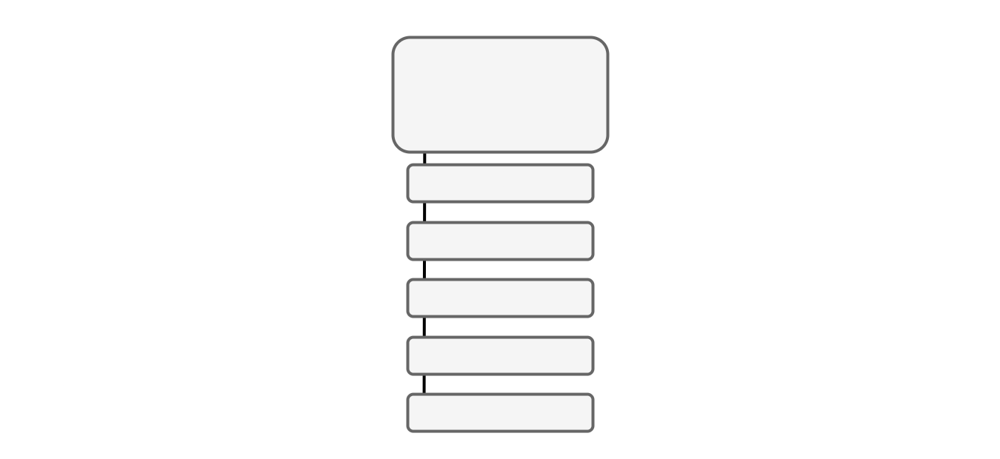
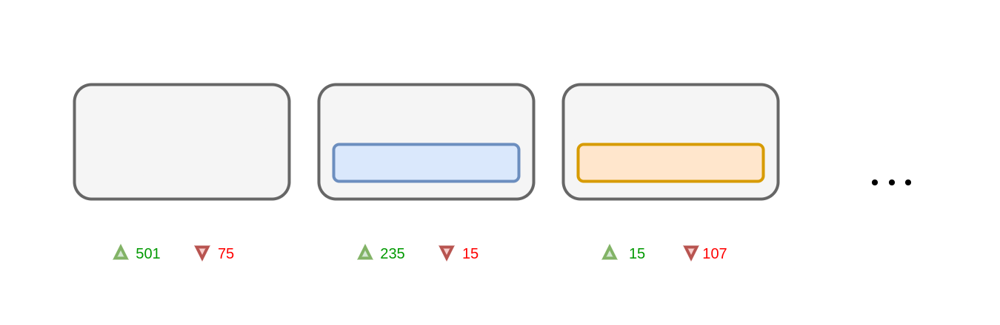
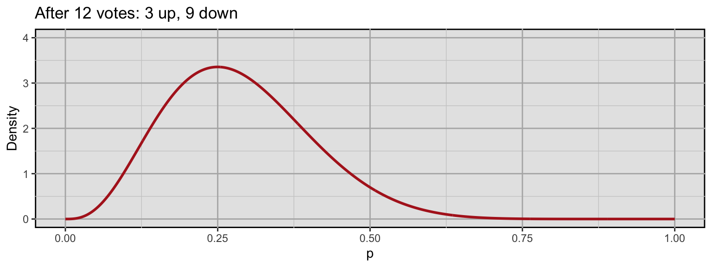
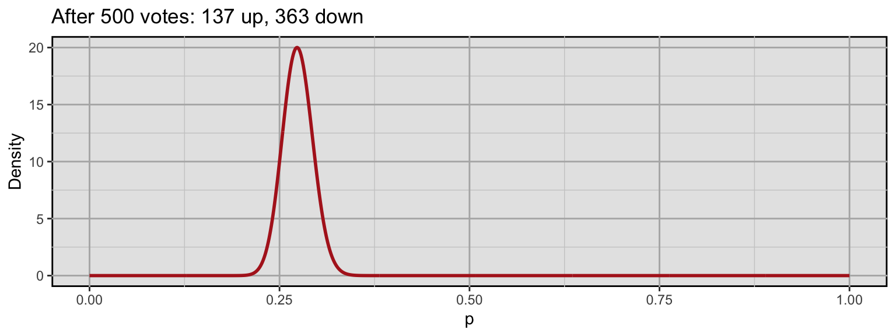
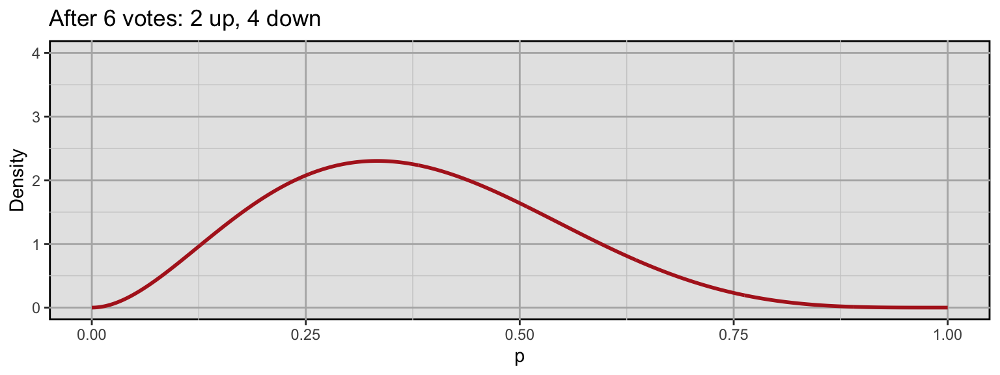
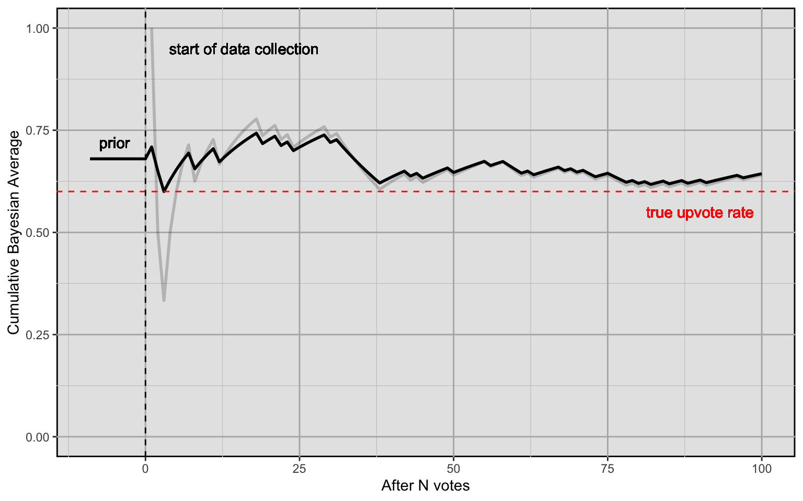
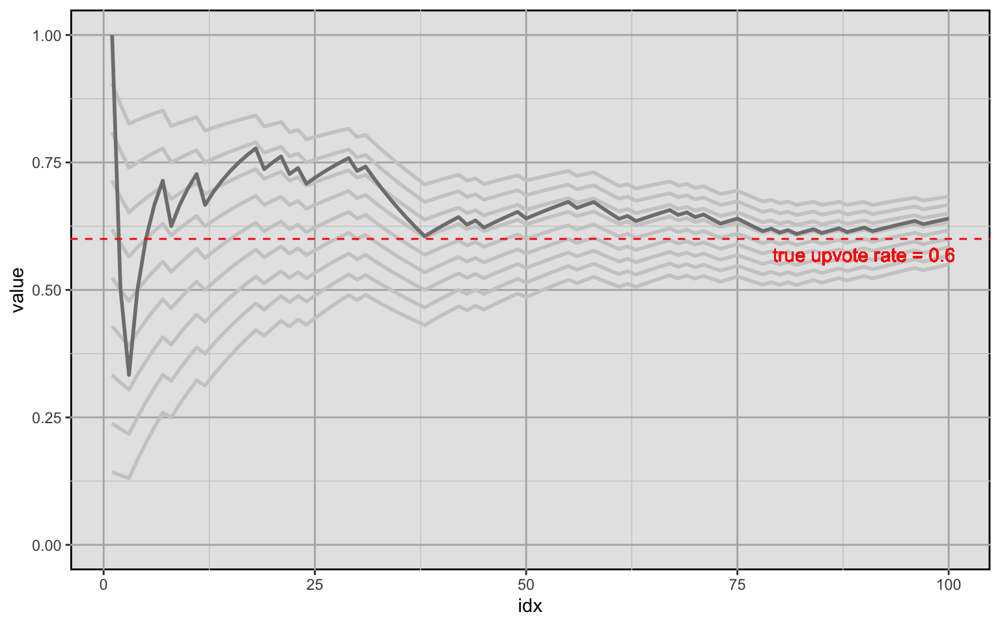
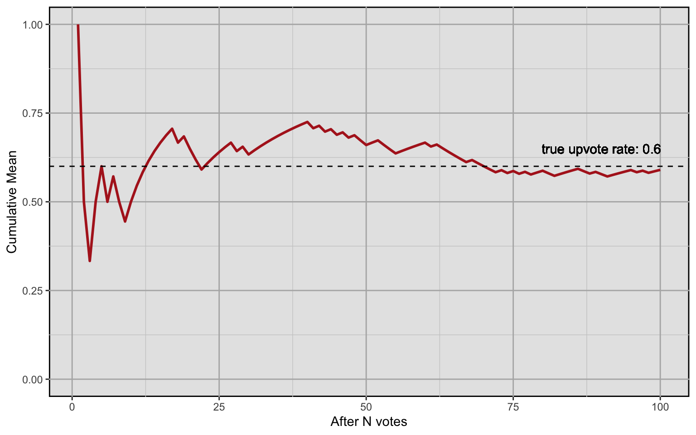
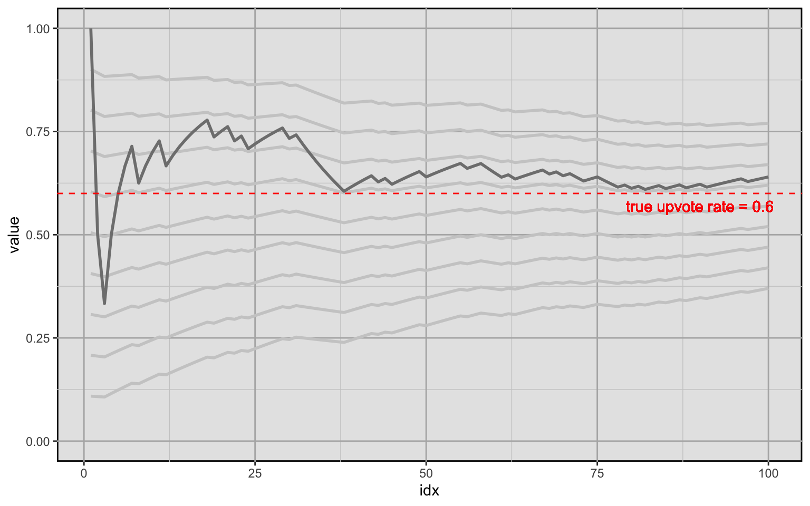

Chapter 2 Rating and Evaluating Content
The basic form of content users can provide on the Y platform is a post. In the following explanations, we visually represent a post by a rectangle with rounded corners like this.
A post is the start of a conversation. Users can leave replies to posts which then form a conversation thread. Replies are posts themselves.

For each post that has any replies, we try to find the reply that adds the most useful context to the post. We call this reply the post’s note (in reference to X’s Community Notes from which we took a lot of inspiration). Obviously, “most useful” is a very vague term and we will go further into our rationale what the most useful context is later on.
Users on Y can rate content by adding an upvote or a downvote. There are two essential forms of content users can rate: posts and posts with a note. We call those units Rateable Units of Information (RUI). For each RUI, we keep a tally of upvotes and downvotes.

2.1 Modeling Upvote Rates
A naive way of using upvotes and downotes for rating a post would be to simply calculate the ratio between them: \(upvotes:downvotes\). Or expressed as the fraction of upvotes over all votes:
\[ \frac{upvotes}{upvotes + downvotes} \]
We call this rate the upvote rate.
Another way of thinking about the upvote rate is as an average vote. If we model the upvote rate as a random variable, we might encode upvotes with a value of \(1\) and downvotes with a value of \(0\). A sample post’s gathered votes at a certain point in time \(t\) might look like this:
\[ (1, 0, 0, 0, 1, 0, 0, 0, 0, 1, 0, 0) \]
The post has gathered a total of 12 votes of which 3 are upvotes and 9 are downvotes. The upvote rate (i.e., the “average” vote) for this sample is:
\[ \rho = \frac{\sum_{i=1}^n x_i}{n} = \frac{upvotes}{upvotes + downvotes} = \frac{3}{3 + 9} = 0.25 \]
2.2 Modeling Belief about the “True” Upvote Rate
We assume that each post has a “true” upvote rate that we can only estimate by collecting data on it (i.e., collecting votes on a post). We model the true upvote rate as a random variable that follows a Beta distribution:
\[ upvoteRate \sim \beta(upvotes, downvotes) \]
We use this model because yet another way of thinking about the upvote rate is as the probability of a vote being an upvote and the Beta distribution is a suitable model for proportions or probabilities.
The Beta distribution has two shape parameters \(\alpha\) and \(\beta\) which in our case are given by our upvote and downvote counts. To provide a more intuitive understanding of how this distribution models our upvote rate, here is an example of how it develops for an example post. We initialize the distribution with a prior of 1 upvote and 1 downvote. This is equivalent to a uniform distribution: We assign equal probability to any outcome, i.e., to any upvote rate.

Now let’s use the previous example vote sample from above:
\[ (1, 0, 0, 0, 1, 0, 0, 0, 0, 1, 0, 0) \]
Using the example above, we get the following distributions at different points in time:




As you can see, the distribution updates and the probability mass becomes more concentrated around a smaller range of values which means we become more and more certain about our beliefs about the true upvote rate. If the post above would develop further with a similar trajectory, the following could be the outcome after 500 votes:
We are now relatively certain that the true upvote rate is somewhere between around 0.2 and 0.3.
2.3 Estimating the True Upvote Rate
Now that we can express our beliefs about the true upvote rate, how do we make a “best guess” at any given point in time? A naive solution would be to just take the sample upvote rate as introduced above:
\[ P(U) = \frac{\sum_{i=1}^n x_i}{n} = \frac{upvotes}{upvotes + downvotes} \]
This solution is naive because it ignores an important fact: In the beginning, we have very little information (in fact no information) about the upvote rate of the post. Thus, each new arriving vote has an outsized effect on our estimate that just gets increasingly small over time. This would result in very erratic estimates in the beginning which would only smooth out over time. Here is how the cumulative mean develops for a random vote history with a true upvote rate of 0.6:

If we were to use this metric to compare posts, getting a very high upvote rate estimate in the early stages of a post would essentially come down to luck. It might then temporarily fare overly well (or overly poorly) compared to other posts. We have to take into account prior information to avoid this.
2.4 The Bayesian Average
The Bayesian Average uses a weighted prior estimate of the average to avoid the erratic shifts in the estimate when there is not a lot of data. It is calculated as follows:
\[ \frac{Cm + \sum_{i=1}^n x_i}{C + n} \]
\(C\) is a weight constant and \(m\) is our prior belief about the average. But what does this achieve in concrete terms?
Let’s build up to this formula step by step using our example of estimating the true upvote rate of a post. First, remember that the sample upvote rate constitutes the “plain” average. Let’s say our dataset \(X\) consists of \(1\)s and \(0\)s, where \(1\) denotes an upvote and \(0\) denotes a downvote. Then \(\sum_{i=1}^n{x_i}\) is the number of upvotes (because downvotes are encoded as \(0\)s) and \(n\) is the total number of votes \(upvotes + downvotes\). The plain average is calculated as follows:
\[ \frac{\sum_{i=1}^n x_i}{n} \]
Or in concrete terms:
\[ \frac{upvotes}{upvotes + downvotes} \]
The Bayesian average is thus:
\[ \frac{C \cdot m + upvotes}{C + upvotes + downvotes} \]
Now what does it mean that we add \(C \cdot m\) to the nominator and \(C\) to the denominator?
Practically, adding these terms to our formula means that we calculate the cumulative average as if we had collected \(C\) votes with an upvote rate of \(m\) before we collected the first vote on our post. If our prior belief about the average is 0.68 and we chose a weighting factor of 10, this would mean that we calculate the average as if we had previously collected 10 data points which amounted to an upvote rate of exactly 0.68.
Plugging in the values makes this apparent:
\[ \frac{10 \cdot 0.68 + upvotes}{10 + upvotes + downvotes} = \frac{68 + upvotes}{100 + upvotes + downvotes} \]
Graphically, it looks like this (the light grey line is the plain average for comparison):
As you can see, the cumulative Bayesian average is much less erratic when little data is available. However, there is an important question left: How do we chose a good prior and a good weight?
Here is how the Bayesian average develops for different prior beliefs about the average. Bayesian averages over time are indicated by light grey lines, the priors chosen here are 0.1 through 0.9 and the weight is kept constant at 20. The plain average is overlayed in darker grey for reference.
And here is that same plot with the same priors, but with a weight of 100.

TODO: write a section about how to chose a prior